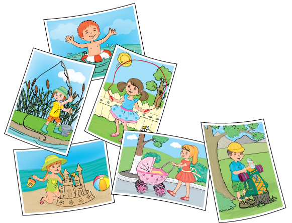

Homokvárhoz: kupacot,
horgászoknak: kukacot,
hegymászóknak: nagy hegyet,
hűs fagyihoz: friss tejet,
folyópartra: fát, nagyot,
vakációt – száz napot!

Hány „h” hanggal kezdődő szó van a versben?
1. 4
2. 5
3. 6
Melyik a vers egyszótagú szavainak helyes betűrendje (ábécé-sorrendje)?
1. nagy, hűs, friss, fát, száz
2. friss, fát, hűs, száz, nagy
3. fát, friss, hűs, nagy, száz
Hány magánhangzóból, illetve mássalhangzóból áll a hegymászóknak szó?
1. 4 magánhangzóból és 7 mássalhangzóból
2. 4 magánhangzóból és 8 mássalhangzóból
3. 3 magánhangzóból és 7 mássalhangzóból
Hogyan szótagoljuk helyesen a folyópartra szót?
1. fo-lyó-par-tra
2. fo-lyó-part-ra
3. foly-óp-art-ra